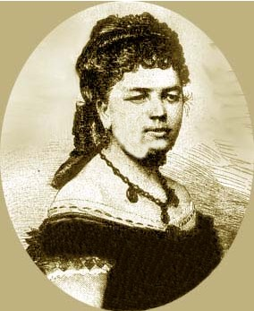

Filoginia - Antología escolar de escritoras hispánicas contemporáneas
Josefa Amar y Borbón
Retrato de Josefa Amar
José Hachuel. Retrato de Josefa Amar(CC BY-SA)
Esta no es Josefa Amar, sinoPatrocinio de Biedma y la Moneda, 1845-1927(CC BY-SA)
Nació en Zaragoza el 4 de febrero de 1749 y murió el 21 de febrero de 1833 con 84 años, vivió la mayoría de su vida en Aragón.
Tenía cinco hermanos y su madre se llamaba Ignacia de Borbón y su padre, José Amar, y era médico de cámara de Fernando VI.
No hay ninguna foto ni retrato pictórico donde se haya descrito físicamente.
Ella ha vivido en Aragón, Tarragona e incluso en Madrid, siendo un periodo breve este último. Josefa tuvo la suerte de contar con prestigiosos eruditos como preceptores, entre ellos Rafael Casalbón y Antonio Berdejo, que la guiaron en sus estudios. Pronto destacó en varios ámbitos, entre ellos las lenguas (aprendió entre otras, latín, griego, inglés, francés e italiano) y las ideas, estudiando la obra de ilustrados franceses. A pesar de todo ello, la preocupación de la época era que contrajera matrimonio a una edad temprana, por lo que a los 23 años es casada con un abogado viudo de 47 años llamado Joaquín Fuentes Piquer, un hombre al que casi no conocía y con el que tuvo, en 1775, su único hijo llamado Felipe.
Ella tenía una gran afición por la cultura en aquel siglo y una buena habilidad que tenía era el saber defender a las mujeres con argumentos racionales, qué derechos tenían las mujeres y defender que eran iguales que los hombres, que podían estudiar y desempeñar cargos al igual que los hombres… Y las defendió escribiendo un ensayo.
No he podido encontrar información sobre sus gustos.
Su opinión era que no estaba de acuerdo con la política en ese momento, ni con sus leyes, porque eran desigualitarias entre los dos sexos. Pensó que intentar cambiarla era buena idea y lo acabó haciendo con ayuda de otras mujeres.
José Hachuel. Josefa Amar, Discurso en defensa del talento de las mujeres(CC BY-SA)
Josefa Amar y Borbón. El discurso en defensa del talento de las mujeres
Introducción
La principal idea del texto es analizar el papel de las mujeres a lo largo de la historia, y demostrar que a igualdad de condiciones y conocimientos, no tiene justificación que la mujer ocupe un papel secundario.
Históricamente desde el principio de los tiempos a la mujer siempre se le ha dado menos valor que al hombre. A lo largo del texto de Josefa Amar comprobamos que esto ha sido así porque ha interesado principalmente a los hombres. Estos se han reservado los mejores empleos, las mejores causas y las mujeres simplemente se dedicaban a adornar su cuerpo y a hacer las labores del hogar. ¿Cómo cambiar esto si los hombres tratan con tanta desigualdad a las mujeres? Es muy difícil al estar rodeadas éstas de tiranos en vez de compañeros. Al hombre le interesa que la mujer sea ignorante, de ahí su desprecio por ellas. Sin embargo en otros lugares del mundo las mujeres son libres y hasta los hombres las admiran y aun así quieren mandar sobre ellas. En la Biblia primero se crea a Adán y después a su mujer, y Eva pecó por curiosidad lo cual es una señal de talento.
Las ideas de Josefa están en la onda de la obra del padre Feijoo, Defensa de las mujeres, donde se denuncia que a los hombres les interesaba que las mujeres fueran ignorantes.
Lectura
Ninguno que esté medianamente instruido, negará que en todos tiempos, y en todos países, ha habido mugeres que han hecho progresos hasta en las ciencias más abstractas. Su historia literaria puede acompañar siempre a la de los hombres, porque quando éstos han florecido en las letras, han tenido compañeras, e imitadoras en el otro sexo.
En el tiempo que la Grecia fue sabia, contó entre otras muchas insignes, a Theano, que comentó Pithágoras, a Hypparchia,que excedió en la Filosofía y Matemática a Theón, su Padre y maestro; a Diotima, de la qual se confesaba discípulo Sócrates. En el Lacio, se supone haber inventado Nicostrata las Letras Latinas, las quales supieron después cultivar varias mugeres, entre otras Fabiola, Marcella y Eustequia. En Francia es largo el catálogo de Literatas insignes, y quando otras no hubiera, bastarán los nombres de la Marquesa de Sebigné, de la Condesa de la Fayete, y de Madama Dacier, para acreditar que se han distinguido igualmente que sus paisanos insignes.
En el día continúan varias Señoras, honrando su sexo con los escritos, como puede verse en la Década Epistolar de D. Francisco María de Silva. En la Rusia florecen en el día las letras, pero si esta revolución tan gloriosa se debe a los esfuerzos del Czar Pedro el Grande, los continúa la actual Czarina Catalina II, la qual ha escrito el Códice de las Leyes, obra que no se puede alabar bastantemente, y una Novela moral y sabia, dirigida a la instrucción de sus Nietos: ambas obras las ha escrito en Francés, cuyo Idioma posee con tal gracia y finura, a que llegan pocos de los mismos Franceses. Esta insigne muger sería injusta, si conociendo por su misma experiencia, de quanto es capaz su sexo, no le honrase como merece. Pero no hay que hacerla este cargo, porque premia el mérito donde quiera que le encuentra. Así se verifica en la Princesa de Askoff Heroína ilustre, la qual después de haber manifestado a las tropas Rusas su espíritu marcial, sabe como otra Minerva todas las ciencias, y por ello y por su numen Poético, la ha elegido su Soberano para cabeza y Presidenta de la Academia Real de las Ciencias de Petersburgo.
CONCLUSIÓN
a) ¿De qué forma se representa en el texto la mentalidad dominante en su época?
En el texto la mentalidad dominante que se representa de esa época es machista, seguían teniendo la idea de que el hombre era superior a la mujer.
b) Por el contrario, ¿en qué aspectos se cuestiona la mentalidad dominante y la visión de las élites, los grupos privilegiados o el machismo? ¿Cómo ha señalado y criticado los prejuicios y los estereotipos sobre la desigualdad entre mujeres y hombres, sus papeles o roles sociales?
Ella tenía un pensamiento contrario al de la época machista y lo mismo con la actitud, actuaba al contrario de las otras mujeres y daba su propia opinión.
Josefa Amar le daba más importancia a los comentarios de la gente que las otras mujeres. En esa época se veía normal que hablasen mal de las mujeres y estas no hacían nada, se callaban y escuchaban pero Josefa llevaba la contraria siempre, hasta cuándo sacó el discurso en defensa del talento de las mujeres donde representa su opinión y la opinión de las otras mujeres. La diferencia entre ella y las demás mujeres es que ella fue de las únicas que tuvo valor para dar su opinión.